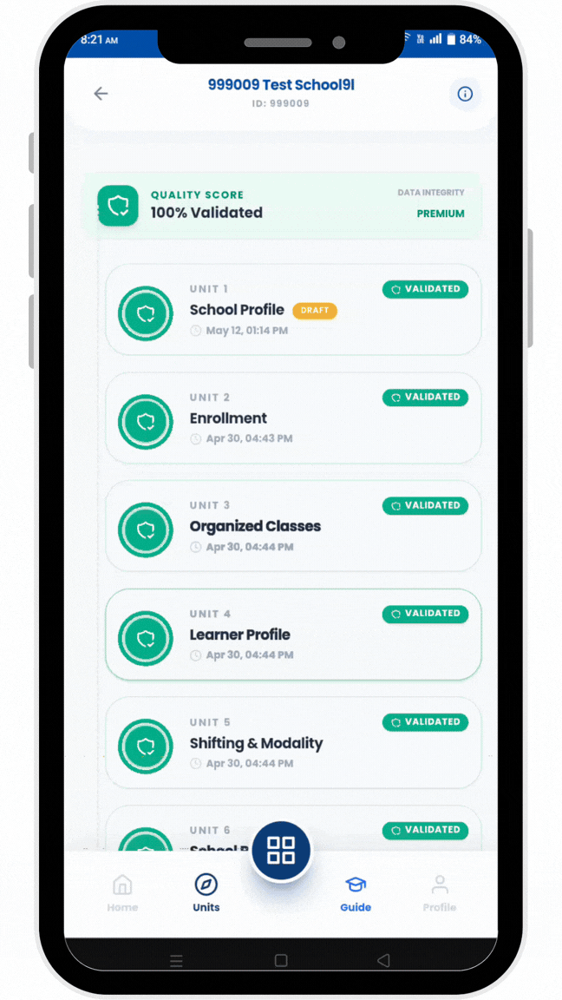
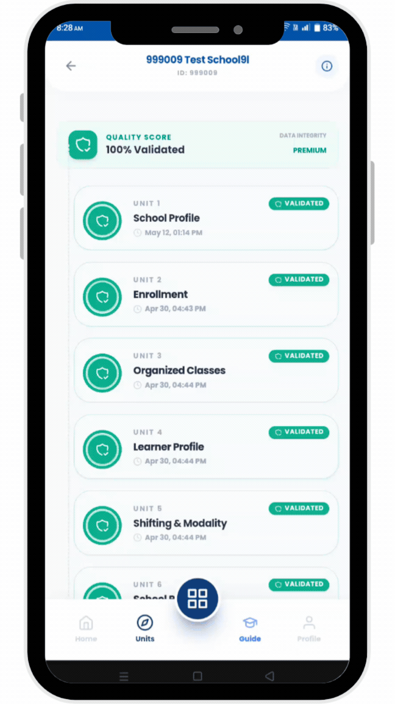
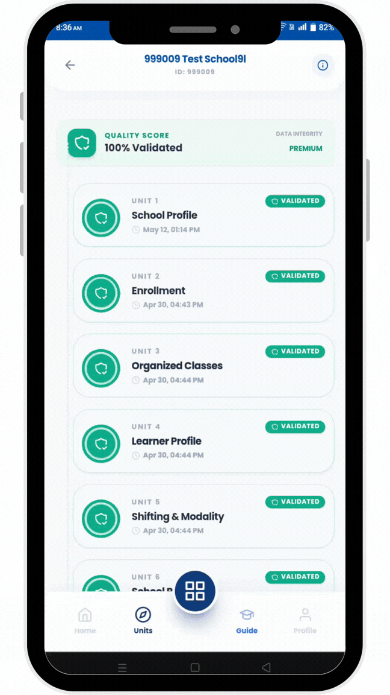
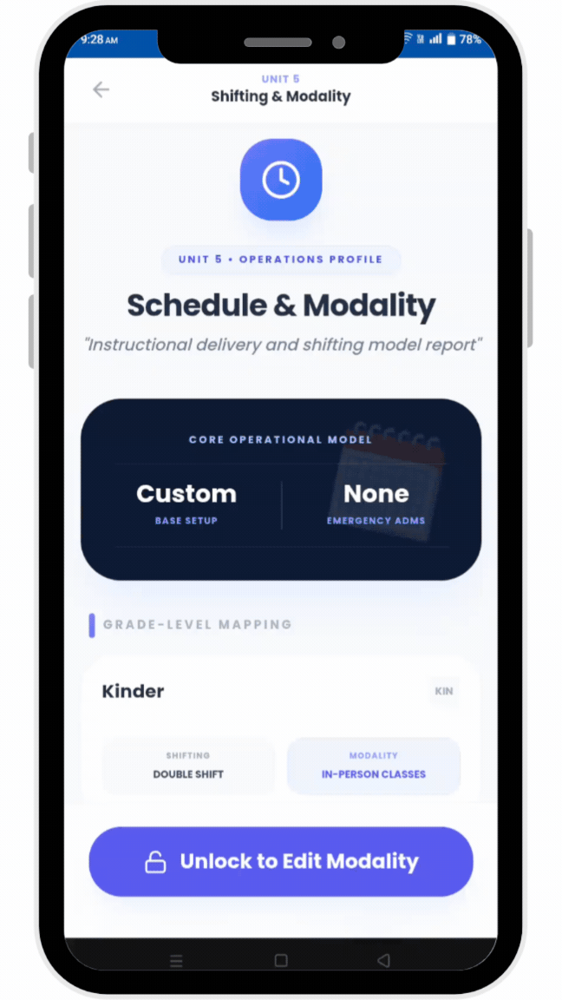
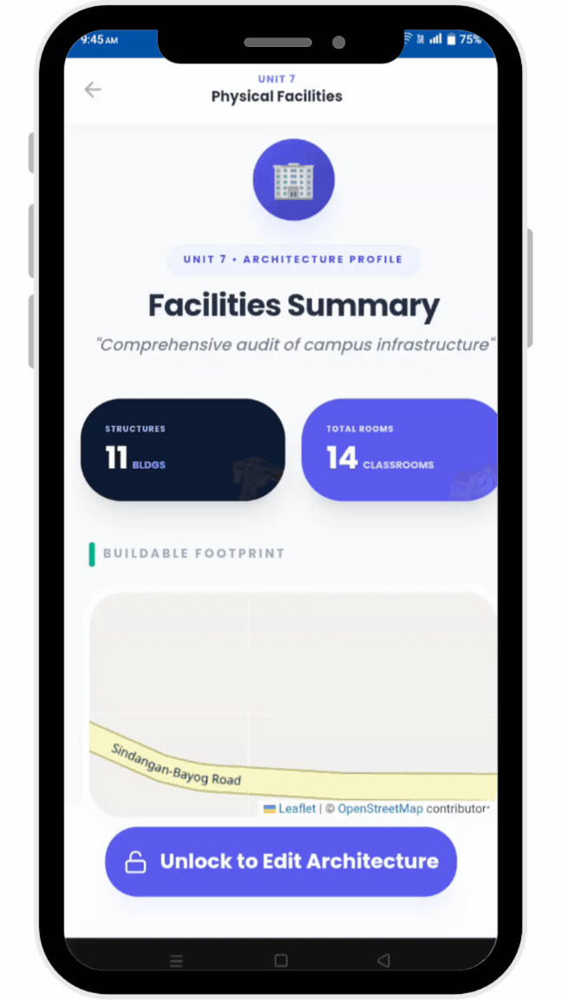
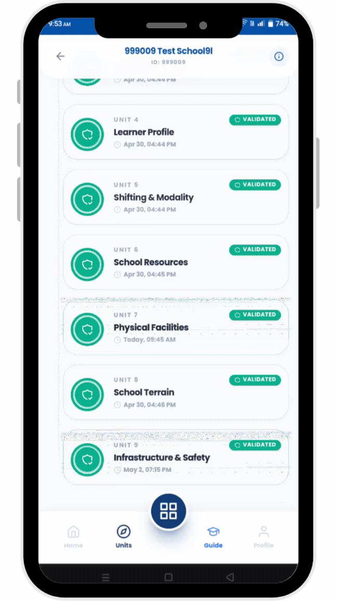

Welcome to InsightED

School Profile
This unit collects the basic identity and official information of the school. It includes the school ID, full school name, exact location, and the levels of education offered (such as Kinder, Elementary, or Secondary). It also records the school head’s information and allows the school to be pinned for mapping purposes. Additionally, it captures school ownership and classification, such as public or private status. This data serves as the foundation of the system because all other records are connected to the school profile. It ensures proper identification, organization, and reporting of school-wide information in InsightED.

Enrollment
This unit records the total number of enrolled learners in the school. It includes general enrollment counts and identifies special learner groups such as those in ARAL Program (Grades 1–6), and other special programs. It also provides a learner data summary for easy analysis. The system helps school heads see how many students are officially enrolled and track special learning needs. This supports planning for teachers, classrooms, and resources. It also helps identify how many learners require additional academic support or intervention programs. The data is updated per school year for accurate monitoring.

Organized Classes
This unit manages classroom distribution and section organization. It records how learners are grouped into sections and checks class size per section. It also supports multigrade combinations and helps optimize classroom assignments. The system provides a classroom registry showing all active sections in the school. This helps school heads balance class sizes and ensure efficient use of teachers and rooms. It also allows monitoring of overcrowded or underutilized classes. The goal is to improve learning conditions by organizing students properly and ensuring fair distribution across all grade levels.

Learner Profile
This unit collects detailed learner group information for the school year. It includes special categories such as ALS learners, Muslim learners, Indigenous Peoples (IP), displaced learners, and overage learners. It also tracks dropout cases from previous and current school years. Additionally, it records nutritional status based on BMI measurements to monitor student health. This helps school heads understand the diversity of learners and identify vulnerable groups. The data supports inclusive education planning and ensures that no learner group is overlooked in school programs, services, and interventions.

Shifting & Modality
This unit records how classes are scheduled and delivered in the school. It checks whether the school follows a single-shift, full in-person setup or uses multiple shifts. It also maps schedules for each grade level. In addition, it tracks Emergency Alternative Delivery Modes (ADM), which are used during disasters or overcrowding. This helps school heads understand how learning is being delivered and whether adjustments are needed. It ensures that class schedules are efficient and that learners are still able to study even during emergency situations or limited classroom availability.

School Resources
This unit tracks all physical and digital resources of the school. It includes classroom facilities by grade level, ICT equipment such as computers and tablets, and mobile learning tools like eCarts. It also records WASH facilities (water, sanitation, and hygiene) and utility services like electricity and internet. This helps school heads monitor whether resources are enough for students and teachers. It supports planning for improvements and identifying shortages. The data ensures that schools can provide a safe and well-equipped learning environment for all learners.

Physical Facilities
This unit records all school buildings, rooms, and physical structures. It includes building inventory, room dimensions, usage type, and seating capacity. It also supports mapping of school spaces using a visual builder. Rooms are categorized by grade level or function such as instructional or non-instructional areas. This helps school heads manage space efficiently and plan construction or renovation needs. It also ensures classrooms are properly assigned and safe for students. The system provides a clear overview of how school space is being used across the campus.

School Terrain
This unit collects data about the school’s environment and accessibility. It includes transport access such as road conditions, lighting, and public transport availability. It also records nearby hazards like rivers, cliffs, or flood-prone areas. Services such as hospitals, barangay halls, and transport terminals are mapped for safety planning. It also tracks natural calamities experienced and social or man-made threats in the community. This helps school heads assess risks and improve safety planning. The data is important for emergency preparedness and ensuring safe access to the school.

Infrastructure & Safety
This unit monitors the safety and condition of school infrastructure. It includes electrical systems, wiring age, and inspection records. It checks safety of power boxes, outlets, cords, and lighting systems. It also tracks CCTV systems, emergency tools, and disaster readiness equipment like fire exits and flashlights. Additionally, it audits safety items such as fire extinguishers, first aid kits, and emergency radios. Electrical maintenance items are also recorded. This ensures the school environment is safe for students and staff. It helps prevent accidents and prepares the school for emergencies or disasters.